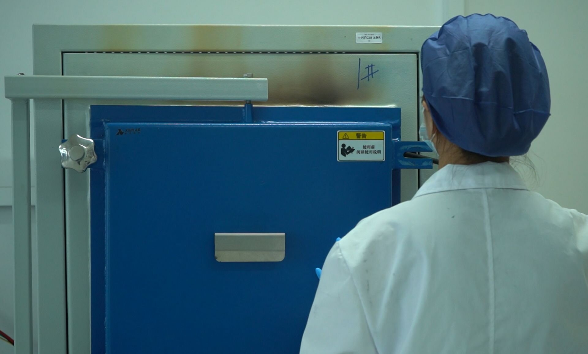

Every HPHT-synthesized memorial diamond begins with a seed crystal. The seed is not merely a starting point — it is the structural template upon which the entire crystal lattice is built. Seed quality, crystallographic orientation, surface preparation, and mounting geometry collectively determine growth rate, crystal morphology, impurity incorporation, and the final gemological characteristics of the finished stone. A defective seed produces a defective diamond, regardless of how precisely temperature and pressure are controlled.
This article examines the technical criteria for diamond seed crystal selection and preparation in memorial diamond manufacturing. We discuss seed material sourcing, crystallographic orientation requirements, surface treatment protocols, and the relationship between seed parameters and growth outcomes. The content is written for manufacturing engineers, laboratory technicians, and B2B partners who need to understand the upstream determinants of memorial diamond quality.
Quick Answer
Diamond seed crystals for HPHT memorial diamond synthesis must be synthetic type Ib, minimum VS2 clarity, birefringence below 10⁻⁴, and RMS surface roughness below 10 nm. BioGem Lab uses ⟨100⟩-oriented seeds (±0.5° accuracy) for optimal round brilliant cutting yield. Surface preparation includes solvent cleaning, acid etching, and hydrogen plasma treatment. Growth initiation uses a two-stage heating protocol: 1,200°C soak for 30 min, then ramp to 1,450–1,550°C over 15 min. Standard growth run: 18–25 days for 0.3–1.5 ct.
The Role of the Seed Crystal in HPHT Growth
In the high-pressure, high-temperature (HPHT) process, a diamond seed crystal is placed in a growth cell along with a carbon source and a metal catalyst solvent. The cell is subjected to temperatures of 1,400–1,600°C and pressures of 5–6 GPa. Under these conditions, the carbon source dissolves in the molten catalyst, and carbon atoms precipitate onto the seed crystal, extending its lattice structure outward. The seed acts as a crystallographic template: the new carbon atoms adopt the same sp³ tetrahedral bonding geometry as the seed, producing a single-crystal diamond that is structurally continuous with the seed material.
The seed crystal influences the growth process in four critical ways. First, its crystallographic orientation determines the growth faces that develop and their relative growth rates. Second, its surface quality determines nucleation efficiency and the density of growth defects at the seed-diamond interface. Third, its impurity content and lattice strain affect the incorporation of impurities from the growth environment. Fourth, its physical dimensions constrain the maximum achievable size of the finished crystal. Each of these factors is controllable through proper seed selection and preparation.
Seed Material Sourcing and Quality Criteria
Synthetic vs. Natural Seed Material
Memorial diamond manufacturers use synthetic diamond seeds rather than natural seeds. The reasons are practical and economic. Synthetic seeds can be produced with controlled dimensions, controlled impurity profiles, and known crystallographic orientations. Natural seeds, by contrast, are irregular in shape, contain unpredictable impurity distributions, and require extensive characterization before use. The cost of a characterized synthetic seed is lower than the cost of characterizing a natural seed to equivalent confidence levels.
At BioGem Lab, seeds are sourced from specialized synthetic diamond substrate manufacturers. The seed material is type Ib synthetic diamond, which contains isolated nitrogen substituents in the lattice. Type Ib is preferred over type IIa for seed applications because its moderate nitrogen content provides a slight growth-rate advantage compared to ultra-pure type IIa, and because the nitrogen-related optical absorption is localized to the seed region rather than propagating into the grown material. The grown memorial diamond itself is typically type IIa or near-colorless type Ia, depending on the carbon source purity and growth conditions.
Minimum Quality Specifications
Seed crystals must meet minimum specifications for size, clarity, and crystallographic perfection. BioGem Lab's incoming seed inspection protocol evaluates each seed against the following criteria before it enters the preparation workflow:
Size: Minimum 2.0 × 2.0 × 0.5 mm for standard memorial diamond growth. Larger seeds (3.0 × 3.0 mm) are used for orders above 1.5 carats to reduce growth time and improve yield. The seed must be large enough to accommodate the mounting hardware without mechanical fracture during cell assembly.
Clarity: Minimum VS2 clarity grade. Seeds containing inclusions larger than 50 microns are rejected because inclusions at the seed surface propagate into the grown crystal as dislocation lines or planar defects. Metallic inclusions are particularly problematic because they can dissolve into the catalyst during growth and re-precipitate in the grown material, producing localized color centers or magnetic properties.
Lattice strain: Birefringence analysis must show uniform strain distribution with no localized stress concentrations. Strain gradients in the seed produce strain in the grown crystal that manifests as optical birefringence, reducing transparency and affecting polarization-dependent optical measurements. Seeds with birefringence values above 10⁻⁴ are rejected.
Surface roughness: RMS roughness below 10 nm on the growth face, as measured by atomic force microscopy (AFM) or white-light interferometry. Rough surfaces create heterogeneous nucleation conditions that produce polycrystalline growth regions or voids at the seed-diamond interface. These defects are structurally weak and optically visible as cloudy zones in the finished stone.
Crystallographic Orientation
The crystallographic orientation of the seed crystal determines which crystal faces are exposed to the growth environment and therefore which faces grow during synthesis. Diamond has a face-centered cubic lattice with strong anisotropy in growth rates between crystallographic directions. The ⟨100⟩ direction (perpendicular to the cube face) grows approximately 2–3 times faster than the ⟨111⟩ direction (perpendicular to the octahedral face) under typical HPHT conditions. This anisotropy is exploited in seed orientation to control the shape of the grown crystal.
For memorial diamond manufacturing, BioGem Lab uses seeds oriented with the ⟨100⟩ direction normal to the growth face. This orientation produces a roughly cubic or cubo-octahedral grown crystal that is favorable for cutting standard round brilliant or princess shapes. ⟨111⟩-oriented seeds, by contrast, produce more octahedral crystals that are better suited for marquise or pear shapes but yield less efficiently for round brilliants because the rough shape requires more material removal during cutting.
Orientation accuracy is critical. A misorientation of even 2–3 degrees from the intended crystallographic axis produces asymmetric growth, resulting in a crystal with unequal dimensions and non-parallel faces. Such asymmetry reduces cutting yield and can produce finished stones with optical asymmetry (uneven brilliance distribution). BioGem Lab mounts seeds using X-ray diffraction alignment to ensure orientation accuracy within ±0.5 degrees of the target axis. This alignment step adds approximately 15 minutes to the cell preparation time but eliminates a significant source of growth variation.
Surface Preparation and Treatment
The surface of the seed crystal must be prepared before growth to ensure clean, defect-free nucleation. Surface contamination — organic residues, polishing compounds, metallic particles from prior handling — inhibits uniform nucleation and produces growth defects. BioGem Lab's seed preparation protocol involves four sequential steps: solvent cleaning, acid etching, hydrogen plasma treatment, and protective storage.
Solvent Cleaning
Seeds are ultrasonicated sequentially in acetone, isopropanol, and deionized water for 10 minutes each. The acetone step removes organic contaminants and polishing oils. The isopropanol step removes residual acetone and dissolves polar organic compounds. The deionized water step removes ionic contaminants. Each ultrasonication step is performed in a separate bath to prevent cross-contamination. After the water step, seeds are dried under flowing nitrogen to prevent water spot formation.
Acid Etching
Following solvent cleaning, seeds are etched in a boiling mixture of concentrated sulfuric acid and potassium nitrate (a modified "piranha" etch) for 30 minutes. This etch removes surface graphitic carbon, metallic contaminants, and the shallow damaged layer produced by mechanical polishing. The etch also micro-roughens the surface at the nanoscale, creating a high density of atomic step edges that serve as preferred nucleation sites during growth initiation. After etching, seeds are rinsed in deionized water and dried under nitrogen.
Hydrogen Plasma Treatment
The final surface preparation step is hydrogen plasma treatment in a microwave plasma chemical vapor deposition (MPCVD) reactor. Seeds are exposed to a hydrogen plasma at 700–800°C for 30 minutes. The hydrogen plasma removes residual oxygen and carbon contaminants from the surface and terminates dangling bonds with hydrogen atoms, producing a chemically stable, atomically clean surface. Hydrogen-terminated diamond surfaces are known to promote high-quality homoepitaxial growth because the hydrogen passivation prevents surface reconstruction and oxidation during the transfer from the plasma reactor to the HPHT growth cell.
After plasma treatment, seeds are transferred to the HPHT cell assembly area under argon atmosphere to prevent re-oxidation. The time between plasma treatment and cell encapsulation is kept below 2 hours. Seeds that cannot be mounted within this window are re-treated before use.

Seed Mounting and Cell Geometry
The seed crystal is mounted in the growth cell using a refractory metal holder (typically molybdenum or tantalum) that positions the seed at the optimal location within the temperature gradient. The growth cell design at BioGem Lab uses a vertical temperature gradient with the carbon source at the hotter top and the seed at the cooler bottom. Carbon dissolves at the hot zone, is transported downward by convection in the molten catalyst, and precipitates onto the cooler seed.
Seed mounting geometry affects thermal coupling and mechanical stability. The seed is mechanically clamped in the holder with a small preload force (approximately 0.5 N) that prevents movement during pressurization but does not induce fracture. A thin layer of hexagonal boron nitride (hBN) paste is applied between the seed and the holder to improve thermal contact and prevent chemical reaction between the diamond and the metal at high temperature. The hBN layer is typically 10–20 microns thick after compression.
The seed-to-carbon-source distance is maintained at 3–5 mm for standard growth runs. This distance is a compromise: shorter distances produce higher growth rates but increase the risk of uncontrolled nucleation on the holder or cell walls. Longer distances reduce growth rate but improve crystal quality by reducing the supersaturation at the growth interface. For memorial diamonds where quality is prioritized over speed, the 4 mm target distance is standard.
Growth Initiation and the Seed Interface
Growth initiation is the critical period during which the seed lattice extends into the new material. The quality of this interface determines whether the grown crystal is single-crystalline or polycrystalline, and whether dislocations propagate from the seed into the bulk. BioGem Lab uses a two-stage heating protocol to control initiation: a low-temperature soak stage followed by a rapid ramp to growth temperature.
The low-temperature soak (1,200°C for 30 minutes) allows the catalyst to melt and wet the seed surface without initiating rapid growth. During this stage, residual surface contaminants that were not removed by the preparation protocol are dissolved into the catalyst or volatilized. The soak also allows the temperature field to equilibrate across the cell, ensuring that the seed is at a uniform temperature before growth begins.
After the soak, temperature is ramped to the growth setpoint (1,450–1,550°C depending on carbon source and target growth rate) over 15 minutes. The ramp rate is controlled to prevent thermal shock to the seed, which could produce cleavage or fracture. Once at growth temperature, the system is held at constant conditions for the duration of the growth run — typically 18–25 days for memorial diamonds in the 0.3–1.5 carat range.
Post-growth, the seed-diamond interface is examined by optical microscopy and Raman spectroscopy. A high-quality interface shows no visible boundary under crossed-polarizers and no shift in the diamond Raman peak (1,332 cm⁻¹) across the interface. Interfaces that show birefringence lines or Raman peak broadening indicate strain or dislocation networks and are flagged for process review. In practice, less than 2% of BioGem Lab's grown crystals show interface defects attributable to seed quality.
Q: What is the minimum seed size for a 1.5 ct memorial diamond?
A: Minimum 3.0 × 3.0 × 0.5 mm for orders above 1.5 carats. Standard seeds (2.0 × 2.0 × 0.5 mm) are sufficient for 0.3–1.0 ct diamonds. The seed must be large enough to accommodate mounting hardware without fracture during cell assembly.
Q: How long does seed preparation take before HPHT growth?
A: Full preparation protocol takes approximately 3 hours: solvent cleaning (30 min), acid etching (30 min), hydrogen plasma treatment (30 min), plus drying and mounting time. Seeds must be mounted within 2 hours of plasma treatment to prevent surface re-oxidation.
Q: What percentage of grown crystals show seed-related defects?
A: Less than 2% of BioGem Lab's grown crystals show interface defects attributable to seed quality. Each interface is examined by optical microscopy and Raman spectroscopy (1,332 cm⁻¹ peak) post-growth. Interfaces with birefringence lines or peak broadening are flagged for process review.
Request a Free OEM Consultation — Reply Within 24 Hours
BioGem Lab provides technical documentation on seed preparation protocols, growth parameters, and quality control for B2B partners. 60-day production guaranteed. Contact our laboratory for manufacturing specifications and partnership terms.
Can any diamond be used as a seed crystal?
No. Seed crystals must meet minimum specifications for clarity (VS2 or better), lattice strain (birefringence below 10⁻⁴), and surface roughness (RMS below 10 nm). Natural diamonds are generally unsuitable due to irregular shape and unknown impurity content. Synthetic type Ib diamonds are the industry standard for HPHT growth seeds.
Does the seed remain in the finished memorial diamond?
Yes. The seed crystal becomes the structural core of the grown diamond and cannot be removed without destroying the crystal. However, the seed typically constitutes less than 1% of the final mass and is located at a position that is removed during the cutting process. The cut stone consists almost entirely of newly grown material derived from the client's carbon source.
How does seed orientation affect the final diamond shape?
⟨100⟩-oriented seeds produce cubic or cubo-octahedral crystals suitable for round brilliant and princess cuts. ⟨111⟩-oriented seeds produce more octahedral crystals better suited for marquise and pear shapes. Misorientation of more than 2–3 degrees produces asymmetric growth that reduces cutting yield and optical symmetry.
What happens if a seed contains an inclusion?
Inclusions at the seed surface propagate into the grown crystal as dislocation lines or planar defects. Metallic inclusions can dissolve into the catalyst and re-precipitate elsewhere in the crystal. Seeds are inspected at VS2 clarity minimum, and any seed with inclusions larger than 50 microns is rejected before entering the preparation workflow.
Why is hydrogen plasma treatment necessary?
Hydrogen plasma removes residual surface contaminants and terminates dangling bonds with hydrogen atoms, producing an atomically clean surface that promotes high-quality homoepitaxial growth. Without plasma treatment, residual oxygen and carbon contaminants can inhibit nucleation or produce defects at the seed-diamond interface.
Explore Manufacturing Capabilities
Learn more about BioGem Lab's HPHT synthesis infrastructure, precision engineering standards, and quality control protocols for memorial diamond manufacturing.
Explore ManufacturingFrequently Asked Questions
Li Lihua — Chief Scientist
Patent inventor ZL 201010565778.9. View profile →
Ready to Partner with BioGem Lab?
Learn about our white-label and OEM manufacturing programs for memorial diamond businesses.
Explore Partnership →Related Articles
HPHT Synthesis Temperature and Pressure Optimization
A technical guide to temperature and pressure optimization in HPHT memorial diamond synthesis. Growth cell dynamics, catalyst behavior, and process validation parameters.
ExploreDiamond Clarity Grading for Memorial Diamonds: Inclusion Types
A technical guide to diamond clarity grading for memorial diamonds. How inclusion types, crystal defects, and microscopic evaluation determine clarity grades.